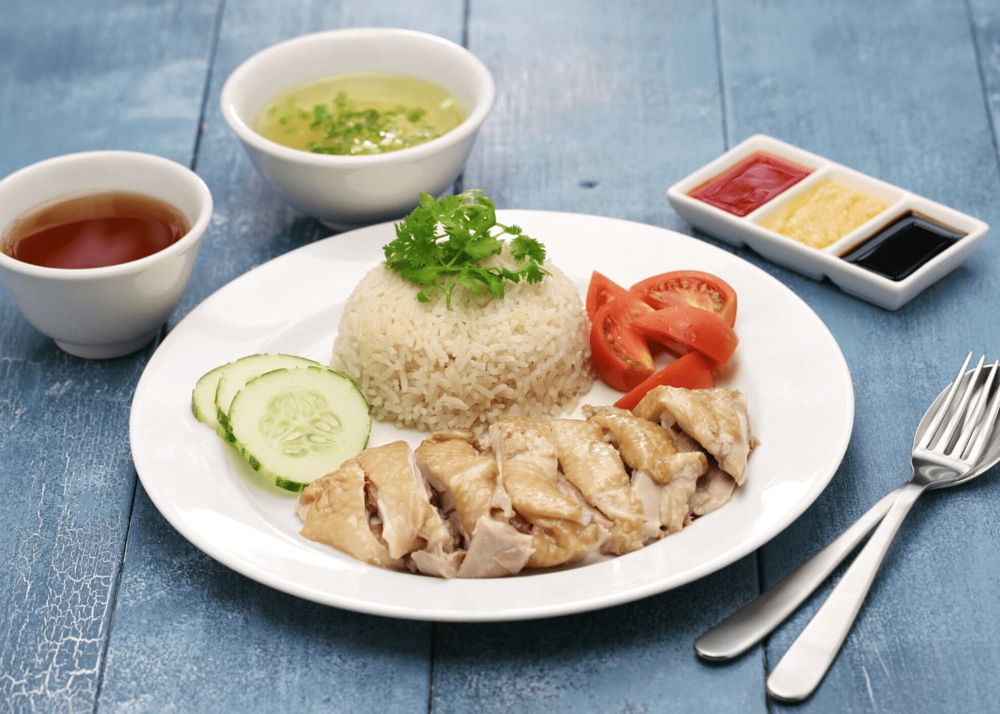

Chicken Rice

Description
Chicken rice is a dish of poached chicken and seasoned rice, served with chilli sauce and usually with cucumber garnishes. It was created by immigrants from Hainan in southern China and adapted from the Hainanese dish Wenchang chicken. It is a popular dish in Singapore, with the locals having it as part of their meals on a daily basis.
Ingredients
Chicken
- 1x whole chicken
- 1x stalk spring onion
- 3x cloves ginger
- 1x fresh ginger root
- 2x cups of water
- 1x cup of salt, to taste
Rice
- 3x cups of uncooked rice
- 3x cloves of garlic
- 1x crushed ginger
- 1x cup of salt, to taste
Steps
- Trim chicken of all fat
- Cook chicken
- Cook rice
- Put rice and chicken together
- Enjoy!